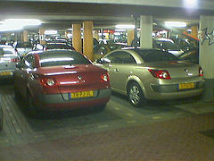

1.1.- Repaso del concepto de objeto
Desde el comienzo del módulo llevas utilizando el concepto de objeto para desarrollar tus programas de ejemplo. En las unidades anteriores se ha descrito un objeto como una entidad que contiene información (atributos) y que es capaz de llevar a cabo ciertas operaciones (métodos) con esa información más algunos estímulos externos (parámetros de entrada de los métodos). Según la información que contengan esos atributos el objeto tendrá un estado determinado y según las operaciones que se puedan llevar a cabo con esos datos será responsable de un comportamiento concreto.
Recuerda que entre las características fundamentales de un objeto se encontraban la identidad (los objetos son únicos y por tanto distinguibles entre sí, aunque pueda haber objetos exactamente iguales), un estado (los atributos que describen al objeto y que tendrán cierto valor en cada momento) y un determinado comportamiento (acciones que se pueden realizar sobre el objeto).

Algunos ejemplos de objetos que podríamos imaginar podrían ser:
- Un vehículo de tipo turismo, de color rojo, marca SEAT, modelo Toledo, del año 2020. En este ejemplo tenemos una serie de atributos, como el color (en este caso rojo), la marca, el modelo, el año, etc. Así mismo también podríamos imaginar determinadas características como la cantidad de combustible que le queda, o el número de kilómetros recorridos hasta el momento.
- Otro vehículo de color amarillo, marca Opel, modelo Astra, del año 2018.
- Otro vehículo más de color amarillo, marca Opel, modelo Astra y también del año 2018. Se trataría de otro objeto (otro vehículo) con las mismas propiedades que el anterior (es idéntico pero no es el mismo). Sería otro objeto diferente con características idénticas, casi como un clon.
- Un cocodrilo de cuatro metros de longitud y de veinte años de edad.
- Un círculo de radio 2 centímetros, con centro en las coordenadas (0,0) y relleno de color amarillo.
- Otro círculo de radio 3 centímetros, con centro en las coordenadas (1,2) y relleno de color verde.
- Una persona con nombre "Juan", apellidos "Torres Waxman" y fecha de nacimiento 01/01/1990.
- Otra persona con nombre "Ana", apellidos "Castillo Gil" y fecha de nacimiento 04/07/1992.
Si observas los ejemplos anteriores podrás distinguir sin demasiada dificultad al menos cuatro familias de objetos diferentes, que no tienen nada que ver una con otra:
- Los vehículos.
- Los círculos.
- Los cocodrilos.
- Las personas.

Es de suponer entonces que cada objeto tendrá determinadas posibilidades de comportamiento (acciones) dependiendo de la familia a la que pertenezcan. Por ejemplo, en el caso de los vehículos podríamos imaginar acciones como: arrancar, apagar, repostar, frenar, acelerar, cambiar de marcha, etc. En el caso de los cocodrilos podrías imaginar otras acciones como: desplazarse, comer, dormir, cazar, etc. Para el caso del círculo se podrían plantear acciones como: cálculo de la superficie del círculo, cálculo de la longitud de la circunferencia que lo rodea, etc.
Por otro lado, también podrías imaginar algunos atributos cuyos valores podrían ir cambiando en función de las acciones que se realizaran sobre el objeto: ubicación del vehículo (coordenadas), velocidad instantánea, kilómetros recorridos, velocidad media, cantidad de combustible en el depósito, etc. En el caso de los cocodrilos podrías imaginar otros atributos como: peso actual, el número de dientes actuales (irá perdiendo algunos a lo largo de su vida), el número de presas que ha cazado hasta el momento, etc.
Como puedes ver, un objeto puede ser cualquier cosa que puedas describir en términos de atributos y acciones. Dependerá de la aplicación que tengas que desarrollar para que tu objeto contenga unos u otros atributos y/o acciones. El límite estará en las necesidades de la aplicación y tu imaginación a la hora de "inventar" objetos.
Un objeto no es más que la representación de cualquier entidad concreta o abstracta que puedas percibir o imaginar y que pueda resultar de utilidad para modelar los elementos del entorno del problema que deseas resolver.
Autoevaluación
Reflexiona
Si has trabajado antes con el modelo Entidad/Relación para representar información a la hora de modelar un sistema de información o una base de datos, es posible que hayas reparado en la la similitud que existe entre el concepto de objetos y el de instancias o casos individuales de una entidad.